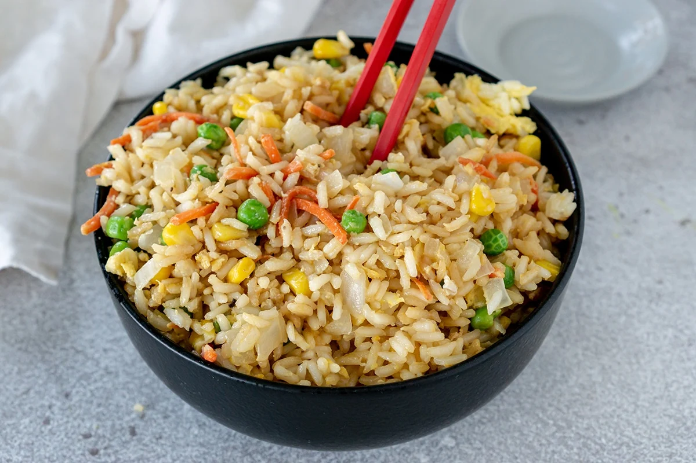

Fried Rice

Description
A simple dish and a staple of Chinese takeout restaurants. This can be made with virtually any protein and simple vegetables.
It is very important that the rice be washed and ideally the rice should be chilled in the fridge for at least 4 hours.
Vegetable amounts and choices can be altered as you wish. Once it's done, it will keep in the fridge for a few
days and don't forget to spice it up with some sriracha!
Ingredients
For rice
- 1 cup of rice, washed
- 2 cups of water
Everything else
- 1.5 tbsp oyster sauce
- 1.5 tbsp light soy sauce
- 1.5 tbsp dark soy sauce
- 2 eggs, whisked
- Can of corn, drained
- Can of peas, drained
- .5 lb to 1 lb carrots
- .5 lb to 1 lb chicken
Steps
- Bring the 2 cups of water and 1 cup of rice in a pot to a boil, med to high flame, then turn down the heat to simmer it for 20 minutes
- Assuming the rice has been chilled for at least 4 hours, heat up some oil in your pan
- Add the chicken, or protein of your choice, and cook thoroughly
- Push aside or remove chicken, then add the whisked eggs
- Eggs will cook quickly, make sure to break up the clumps with your spautla
- Add the vegetables to the pan and stir to mix with the eggs at medium heat
- Add the soy sauces, oyster sauce, and the chicken back to pan
- Stir well until vegetables are cooked to your liking and the rice looks right
- You're done!